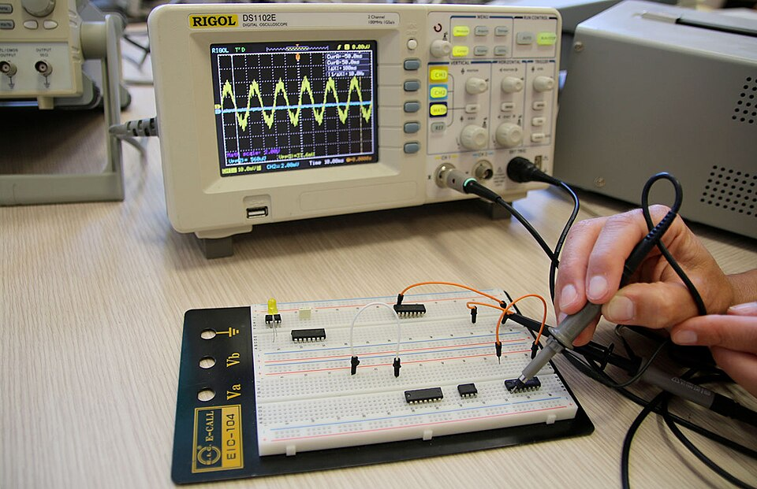

L'offerta formativa del Malignani
L'I.S.I.S. "Arturo Malignani" offre diversi percorsi di studio. La scuola è conosciuta soprattutto per gli indirizzi tecnici e per l'importanza data alle attività pratiche e ai laboratori.
Oltre agli indirizzi tecnici è presente anche il Liceo Scientifico delle Scienze Applicate. In questo modo gli studenti possono scegliere un percorso più adatto ai propri interessi e ai propri obiettivi futuri.
1. Liceo Scientifico - Scienze Applicate
Il Liceo Scientifico delle Scienze Applicate è pensato soprattutto per chi è interessato alle materie scientifiche. Rispetto al liceo scientifico tradizionale non è previsto lo studio del latino, mentre viene dato più spazio a informatica, fisica, chimica e biologia.
Il percorso dura cinque anni e permette di ottenere il diploma necessario per poter proseguire gli studi all'università.
2. Istituto Tecnico Tecnologico
L'Istituto Tecnico Tecnologico comprende diversi indirizzi. La caratteristica principale di questi percorsi è l'unione tra le materie teoriche e le attività pratiche svolte nei laboratori.
Trasporti e Logistica - Costruzioni Aeronautiche
Questo indirizzo riguarda il mondo dell'aeronautica e dei trasporti. Gli studenti studiano argomenti come la struttura degli aerei, i motori, la fluidodinamica e i sistemi di bordo.
Una delle caratteristiche più particolari del Malignani è l'hangar della scuola, dove sono presenti veri aeromobili e diversi tipi di motori che possono essere utilizzati durante le esercitazioni.

Informatica e Telecomunicazioni
Questo indirizzo è dedicato all'informatica, alle reti e allo sviluppo di programmi. Gli studenti imparano a utilizzare diversi linguaggi di programmazione, a creare applicazioni e a capire come funzionano le reti informatiche.
Meccanica, Meccatronica ed Energia
Questo percorso unisce meccanica, elettronica e informatica. Vengono affrontati argomenti come il disegno tecnico, la progettazione al computer, le macchine utensili e l'automazione industriale.
Elettronica ed Elettrotecnica
In questo indirizzo si studiano i circuiti elettrici ed elettronici, i sistemi digitali e l'automazione. Gli studenti possono anche lavorare con microcontrollori, PLC e altri dispositivi utilizzati nell'industria.
È un percorso adatto soprattutto a chi è interessato all'elettronica, all'elettricità e al funzionamento dei sistemi automatici.

Chimica, Materiali e Biotecnologie
Questo indirizzo è rivolto a chi è interessato alla chimica, ai materiali e alle biotecnologie. Durante il percorso vengono svolte anche attività pratiche nei laboratori per mettere in pratica gli argomenti studiati in classe.
Costruzioni, Ambiente e Territorio
Questo indirizzo riguarda soprattutto l'edilizia, la progettazione e il territorio. Tra gli argomenti studiati ci sono il disegno tecnico, la topografia, l'estimo e la progettazione degli edifici.